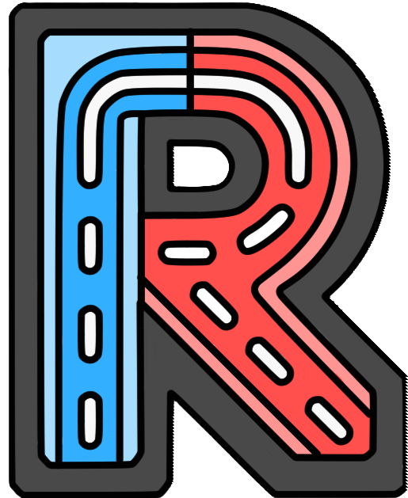
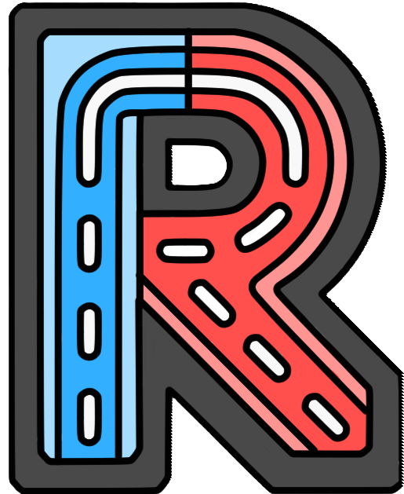

RouteExplainer: An Explanation Framework for Vehicle Routing Problem
#Vehicle Routing Problem
#Explainability
#Counterfactual Explanation
#Large Language Models
PAKDD 2024

RouteExplainer: An Explanation Framework for Vehicle Routing Problem
#Vehicle Routing Problem
#Explainability
#Counterfactual Explanation
#Large Language Models
PAKDD 2024
The Vehicle Routing Problem (VRP) is a combinatorial optimization problem that aims to find the optimal routes for a fleet of vehicles to serve customers. Since Dantzig and Ramser [1] introduced its concept, various VRPs that model real-world problems have been proposed, imposing constraints such as time windows [2], vehicle capacity [1], and minimum prize [3]. Concurrently, various solvers have been proposed, ranging from exact solvers [4] to (meta-)heuristics [5], Neural Network (NN) solvers [6-9], and their combinations [10-12].
Conventional solvers such as exact solvers and heuristics inherently possess algorithmic transparency, yet it is difficult to construct interpretable explanations for their outputs summarizing the complicated optimization processes. On the other hand, NN solvers are naturally black-box methods, and their outputs are not explainable as is. However, in contrast to the success of developing VRPs and their solvers, explainability for VRP still remains unexplored. Here, we argue that explainabilty for VRP is essential for responsible/interactive VRP applications. In particular, explaning the influence of each edge in a route is significant. For example, in emergency power supply routing, when asked why a vehicle went rescue to a location instead of other locations at a certain time, the subsequent influence of the movement (i.e., edge) allows the responsible person to justify the decision. In interactive tourist route generation, the influence of an edge in a generated route provides hints to tourists who try to modify the edge based on their preferences.
We quantitatively evaluate our edge classifier on Actual-Route-Datasets and CF-Route-Datasets, which include the labels of each edge in actual routes and CF routes of different sizes of four VRPs: Traveling Salesman Problem with Time Windows (TSPTW), Prize Collecting TSP (PCTSP), PCTSP with Time Windows (PCTSPTW), and Capacitated VRP (CVRP). Table 1 shows the Macro-F1 (MF1) and calculation time of edge classification in each problem, where LKH, Concorde, and ORTools (the annotation strategy with different sovlers) are baselines and \(\rm{EC}^*_*\) is the familiy of our edge classifier (second block includes model ablations and the third one includes variants of loss functions). In short, our edge classifer outperforms baselines by a large margin in terms of calculation time while maintaining reasonable MF1 (e.g., 85-90%) on most problems. The results demonstrates its capability for handling a huge number of requests in real-time applications. See our paper for more datails of this evaluation, including the annotation strategy, dataset statics, baselines, and ablations.
We also conduct a qualitative evaluation of RouteExplainer on a Kyoto tour (case study of TSPTW).
Fig.6 shows the explanation generated by RouteExplainer, which includes an explanation text generated by GPT-4 and visual infomation (i.e., a route and intentions of each edge in the route) of the actual and CF routes.
It successfully explains the importance of the actual edge while mentioning the difference between the actual and CF edges regarding their short/long-time effects and impact on the intentions of the subsequent edges.
Furthermore, GPT-4 enables incorporating information of each destination in the explanation (e.g., the explanation points out the losses of attenting a guided tour and taking lunch from not visiting the Kyoto Geishinkan).
Please experience our framework for yourself at Hugging Face Spaces (OpenAI API key is required)!

In this work, we proposed the first explanation framework for VRP, and opened the new field of "explanaibily for VRP". On the other hand, some limitations remain, including the accuracy issue of the edge classifier in some VRPs and simple edge intentions annotated by a rule. We will address these limitaions by increasing data/parameters and leveraging LLM-powered edge annotation. Furthermore, we plan to apply our framework to more general LLM applications, so please stay tuned! We also welcome your extension of this work to various applications :)
@article{dkiku2024routeexplainer,
author = {Daisuke Kikuta and Hiroki Ikeuchi and Kengo Tajiri and Yuusuke Nakano},
title = {RouteExplainer: An Explanation Framework for Vehicle Routing Problem},
year = 2024,
journal = {arXiv preprint arXiv:2403.03585}
url = {https://arxiv.org/abs/2403.03585}
}Here is the part of works related to our framework. See "Related Work" in our paper for all excellent related works.